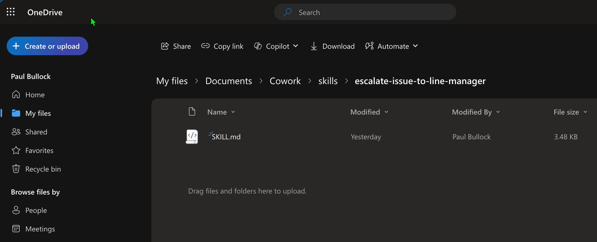

Upload Cowork Skills to your OneDrive
Summary
This sample uploads a custom SKILL.md file to a user's OneDrive Cowork/skills folder using PnP PowerShell.
The script:
- Connects to SharePoint and resolves the target user's personal OneDrive site.
- Ensures the target skills folder path exists under
Documents/Documents/Cowork/skills/<your-skill-folder>. - Uploads the local skill file into that folder.
- SKILL.md file has been tested and verified with high score from the Skills Management skill in Cowork.

<#
----------------------------------------------------------------------------
Created: Paul Bullock
Date: 04/05/2026
.Example
./Set-CoworkAISkills.ps1 -SiteUrl "https://pkbmvp-my.sharepoint.com" -ClientId "57810d72-f1d9-4917-a271-661a4940b478" -SkillFolderName "escalate-issue-to-line-manager" -SkillFileName "SKILL.md"
.Notes
https://pnp.github.io/powershell/cmdlets/Get-PnPFeature.html
https://pnp.github.io/powershell/cmdlets/Resolve-PnPFolder.html
https://pnp.github.io/powershell/cmdlets/Add-PnPFile.html
----------------------------------------------------------------------------
#>
[CmdletBinding()]
param (
$SiteUrl = "https://<your-org>-my.sharepoint.com", # This should be the root of the personal site, e.g. https://tenant-my.sharepoint.com
$ClientId = "<application-client-id-for-pnp-powershell>",
$SkillFolderName = "escalate-issue-to-line-manager",
$SkillFileName = "SKILL.md",
$MyAccount = "first.last@<your-org>.onmicrosoft.com"
)
begin {
# ------------------------------------------------------------------------------
# Introduction
# ------------------------------------------------------------------------------
Write-Host " This script will set SharePoint skills into the Documents Library under Cowork folder" -ForegroundColor Green
# ------------------------------------------------------------------------------
$baseSkillsFolderName = "skills" # Must be lowercase
$libraryName = "Documents"
$coworkFolderName = "Cowork"
}
process {
# Connect to the SharePoint site using PnP PowerShell
Connect-PnPOnline -Url $SiteUrl -ClientId $ClientId -Interactive
# Find my Personal OneDrive Account
$personalProfile = Get-PnPUserProfileProperty -Account $MyAccount
if (!$personalProfile) {
Write-Host "Unable to find personal profile for the user. Please check the account details and try again." -ForegroundColor Red
return
}
$personalSite = $personalProfile.PersonalUrl
# Change the connection to the Personal Site
$connPersonal = Connect-PnPOnline -Url $personalSite -ClientId $ClientId -Interactive -ReturnConnection
# Check if the target library exists
$library = Get-PnPList -Identity $libraryName -ErrorAction SilentlyContinue -Connection $connPersonal
if ($library) {
Write-Host "Document library '$libraryName' exists as expected" -ForegroundColor Cyan
# Ensure Folder called Skills Exist
Write-Host "Ensuring folder '$baseSkillsFolderName' exists in library '$libraryName'..." -ForegroundColor Cyan
# It is deliberate to use the "Documents" reference twice.
# On OneDrive its "Documents/Documents/Cowork/skills/your-custom-skill-folder" due to the way the personal site is structured.
$targetFolderPath = "$libraryName/$libraryName/$coworkFolderName/$baseSkillsFolderName/$SkillFolderName"
$targetFolder = Resolve-PnPFolder -SiteRelativePath $targetFolderPath -Connection $connPersonal
if ($null -ne $targetFolder) {
# Uploading the SKILL file to the library in the subfolder
Write-Host "Uploading skill file '$SkillFileName' to '$targetFolderPath'..." -ForegroundColor Cyan
Add-PnPFile -Path "$SkillFileName" -Folder $targetFolderPath -Connection $connPersonal
Write-Host "Skill file '$SkillFileName' uploaded successfully to '$targetFolderPath'." -ForegroundColor Green
}
else {
Write-Host "Folder '$targetFolderPath' does not exist. Skipping folder creation and file upload." -ForegroundColor Yellow
}
}
}
end {
Write-Host "Done! :)" -ForegroundColor Green
}
Check out the PnP PowerShell to learn more at: https://aka.ms/pnp/powershell
The way you login into PnP PowerShell has changed please read PnP Management Shell EntraID app is deleted : what should I do ?
Contributors
| Author(s) |
|---|
| Paul Bullock |
Disclaimer
THESE SAMPLES ARE PROVIDED AS IS WITHOUT WARRANTY OF ANY KIND, EITHER EXPRESS OR IMPLIED, INCLUDING ANY IMPLIED WARRANTIES OF FITNESS FOR A PARTICULAR PURPOSE, MERCHANTABILITY, OR NON-INFRINGEMENT.